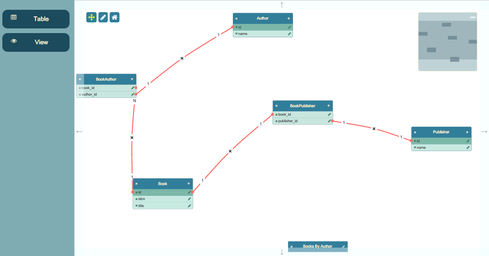

This is a simple database visualizer app, offering support for Tables and Views, with the ability to establish relationships between columns using the mouse.

This page gives you an in-depth look at how the application is put together.
There are three templates used by the app - one each for the node types of Table and View, and one for the Column entries in a Table. The Toolkit uses Rotors as its default templating engine, which has the ability to update previously rendered content. Note that Rotors uses a strict XHTML syntax; you must ensure you close off all HTML tags that you are perhaps accustomed to leaving open, such as <input> or <br>.
<script type="jtk" id="tmplTable">
<div class="table node">
<div class="name">
<div class="delete" title="Click to delete">
<i class="fa fa-times"></i>
</div>
<span>${name}</span>
<div class="new-column add" title="Click to add a new column">
<i class="fa fa-plus"></i>
</div>
</div>
<ul class="table-columns">
<r-each in="columns">
<r-tmpl id="tmplColumn"></r-tmpl>
</r-each>
</ul>
</div>
</script>
In this template you can see the syntax for extracting values out of the content: ${name}, for example. You can see also the r-each and r-tmpl elements - Rotors' loop and nested template inclusion directives.
<script type="jtk" id="tmplView">
<div class="view node">
<div class="name">
<div class="view-delete" title="Click to delete">
<i class="fa fa-times"></i>
</div>
<span>${name}</span>
<div class="edit" title="Click to edit">
<i class="fa fa-pencil"></i>
</div>
</div>
<div class="view-details">${query}</div>
</div>
</script>
The view node template is more simple than the table template; just a couple of data bindings. The type of the script is arbitrary: it just needs to be something the browser won't process. jsPlumb uses jtk as a convention.
<script type="jtk" id="tmplColumn">
<li class="table-column table-column-type-${datatype}" primary-key="${primaryKey}" data-port-id="${id}">
<div class="table-column-edit">
<i class="fa fa-pencil table-column-edit-icon"></i>
</div>
<div class="table-column-delete">
<i class="fa fa-times table-column-delete-icon"></i>
</div>
<div>
<span>${id}</span>
</div>
<!--
configure the li as an edge source, with a type of column, a scope derived from
the columns datatype, and a filter that prevents dragging new edges from the delete button or from the label.
-->
<jtk-source port-id="${id}" port-type="column" scope="${datatype}" filter=".table-column-delete, .table-column-delete-icon, span, .table-column-edit, .table-column-edit-icon" filter-exclude="true"></jtk-source>
<!--
configure the li as an edge target, with a type of column, and a scope derived from the
column's datatype.
-->
<jtk-target port-id="${id}" port-type="column" scope="${datatype}"></jtk-target>
</li>
</script>
This template demonstrates how to use the Toolkit's declarative connectivity constructs: jtk-source tells the Toolkit that the parent element of the jtk-source element (in this case, an LI) should act as a connection source, and jtk-target tells the Toolkit that it is also a connection target. Follow the link for a more detailed discussion of how to use these elements in your templates.
Data for this application is stored in data/schema-1.json inside the application folder. It is loaded by this code:
toolkit.load({
url: "data/schema-1.json",
onload: function () {
_updateDataset();
}
});
This shows the onload callback, which is a function the Surface will call once the data has been loaded. In this application, as with the Flowchart Builder, the current dataset is displayed in a small container below the work area. _updateDataset is the method that keeps this element up to date.
The Surface widget provides a means for you to configure a set of nodes that you wish to be able to drag and drop into the work area. This is the code in the Database Visualizer that does this:
renderer.registerDroppableNodes({
droppables: document.querySelectorAll("#nodePalette li"),
dragOptions: {
zIndex: 50000,
cursor: "move",
clone: true
},
typeExtractor: function (el) {
return el.getAttribute("jtk-node-type");
},
dataGenerator: function (type) {
return { name: type };
}
});
The method is registerDroppableNodes. It takes four arguments:
clone:true. type of a Node you have just dropped. In this case we have written the Node type into the jtk-node-type attribute, so we just extract it from there.typeGenerator function.The Toolkit publishes a long list of events during the rendering lifecycle - nodeAdded, edgeAdded, etc - all of which can be subscribed to from within a palette definition. But for your app's behaviour, it is better to use event delegation and configure all of your event listeners in one place. In the Database Visualizer there are six main pieces of behaviour we need to code that are not handled for us by the Toolkit:
We'll go through each of these and provide a brief code snippet highlighting the main points.
These two are actually handled by the same piece of code:
jsPlumb.on("#canvas", "tap", ".table-delete i, .view-delete i", function() {
var info = renderer.getObjectInfo(this);
jsPlumbToolkit.Dialogs.show({
id: "dlgConfirm",
data: {
msg: "Delete '" + info.id
},
onOK: function (data) {
toolkit.removeNode(info.id);
}
});
});
Two pieces of core Toolkit functionality are used here. First, a method with which you will want to acquaint yourself: getObjectInfo. This method (defined on a Surface, not on a Toolkit instance), takes a DOM element as argument and places it within the context of some object managed by the Toolkit instance that the renderer is associated with. In this case, the click event occurs on an icon. getObjectInfo traverses up the icon's ancestors until it finds an element that is associated with a Toolkit object - in our app, either a Table or View. When a Toolkit object is found, getObjectInfo returns an object with these values:
So in the Table/View delete handler, we first find the associated Toolkit object, and then we prompt the user to see if they wish to delete it. If the users answers yes, then we call removeNode on the Toolkit, passing in the ID of the object to delete. This will cause all Edges associated with the Node to be deleted, and for the UI to be updated accordingly.
This application uses the Toolkit's dialogs import to manage simple interactions with data members such as this. Your application may choose to use a different mechanism.
Note also the use of the tap event here, rather than click. tap is a synthesized event (on non-touch devices; on touch devices it is native) whose purpose is to avoid spurious calls: the default behaviour of a browser with a mouse is to fire a click event even if the mouse has moved between mousedown and mouseup! This event is made available through Mottle, the event manager that vanilla jsPlumb uses.
jsPlumb.on("#canvas", "tap", ".new-column i", function() {
var info = renderer.getObjectInfo(this);
jsPlumbToolkit.Dialogs.show({
id: "dlgColumnEdit",
title: "Column Details",
onOK: function (data) {
// if the user supplied a column name, tell the toolkit to add a new port, providing it the
// id and name of the new column. This will result in a callback to the portFactory defined above.
if (data.id) {
if (data.id.length < 2) {
jsPlumbToolkit.Dialogs.show({id: "dlgMessage", msg: "Column ids must be at least 2 characters!"});
}
else {
toolkit.addNewPort(info.id, {
id: data.id.replace(" ", "_").toLowerCase(),
primaryKey: data.primaryKey,
datatype: data.datatype
});
}
}
}
});
});
In this handler we again use getObjectInfo to find the Node to which the current operation applies. Then we prompt the user for a column name, and if it is longer than 2 characters, we register it on the Toolkit. The method used for that is addNewPort, whose signature is:
addNewPort({Node|String} node, {Object} data)
node can be a Node or a Node id (as in this case). data is actually optional, but it is likely you'll want to provide some.
jsPlumb.on("#canvas", "tap", ".table-column-edit i", function() {
var info = renderer.getObjectInfo(this);
jsPlumbToolkit.Dialogs.show({
id: "dlgColumnEdit",
title: "Column Details",
data: info.obj.data,
onOK: function (data) {
// if the user supplied a column name, tell the toolkit to add a new port, providing it the
// id and name of the new column. This will result in a callback to the portFactory defined above.
if (data.id) {
if (data.id.length < 2) {
jsPlumbToolkit.Dialogs.show({id: "dlgMessage", msg: "Column ids must be at least 2 characters!"});
}
else {
toolkit.updatePort(info.obj, {
id: data.id.replace(" ", "_").toLowerCase(),
primaryKey: data.primaryKey,
datatype: data.datatype
});
}
}
}
});
});
This looks quite similar to the add column functionality: the major differences being that we pass in the column's data to the dialog, so that it may populate the UI, and we use updatePort in the callback.
A note here on the various update*** methods in the Toolkit. updateEdge will always result in the associated connection being updated and repainted accordingly. Also, if you're using the Toolkit with its default template rendering mechanism, any calls to updatePort or updateNode will result in the data changes being reapplied to the rendered elements; this is because Rotors supports subsequent updates to elements it has rendered. So, in this application, it suffices for us to call updatePort on the Toolkit and we know our UI will be updated correspondingly. If, however, you use a custom template renderer, this will not happen for you automatically. Manual intervention will be required.
jsPlumb.on("#canvas", "tap", ".table-column-delete i", function () {
var info = renderer.getObjectInfo(this);
jsPlumbToolkit.Dialogs.show({
id: "dlgConfirm",
data: {
msg: "Delete column '" + info.id + "'"
},
onOK: function (data) {
toolkit.removePort(info.obj.getNode(), info.id);
}
});
});
This general pattern will be familiar to you now. Get the associated Toolkit object, prompt the user, take some action. Here we remove the column from the table by calling the removePort function, whose method signature is:
removePort({Node|String} node, {Port|String} Port)
Again, "Node" can be either the actual Node (which is what we pass in here), or a Node id, and Port can be an actual Port or just a Port id.
jsPlumb.on("#canvas", "tap", ".view .name span, .table .name span", function () {
var info = renderer.getObjectInfo(this);
jsPlumbToolkit.Dialogs.show({
id: "dlgName",
data: info.obj.data,
title: "Edit " + info.obj.data.type + " name",
onOK: function (data) {
if (data.name && data.name.length > 2) {
// if name is at least 2 chars long, update the underlying data and
// update the UI.
toolkit.updateNode(info.obj, data);
}
}
});
});
jsPlumb.on("#canvas", "tap", ".view .edit i", function () {
var info = renderer.getObjectInfo(this);
jsPlumbToolkit.Dialogs.show({
id: "dlgViewQuery",
data: info.obj.data,
onOK: function (data) {
// update data, and UI (which works only if you use the Toolkit's default template engine, Rotors.
toolkit.updateNode(info.obj, data);
}
});
});
This is slightly different to the previous examples: first a helper function is defined, which is then called in two places:
var _editEdge = function (edge, isNew) {
jsPlumbToolkit.Dialogs.show({
id: "dlgRelationshipType",
data: edge.data,
onOK: function (data) {
// update the type in the edge's data model...it will be re-rendered.
// `type` is set in the radio buttons in the dialog template.
toolkit.updateEdge(edge, data);
},
onCancel: function () {
// if the user pressed cancel on a new edge, delete the edge.
if (isNew) toolkit.removeEdge(edge);
}
});
};
This is then called when the user double clicks an existing edge; the registration for this is made in the palette passed to the render call:
edges: {
"common": {
connector: "StateMachine", // use StateMachine connector type
paintStyle: { lineWidth: 3, strokeStyle: "#f76258" }, // paint style for this edge type.
hoverPaintStyle: { lineWidth: 3, strokeStyle: "#434343" }, // hover paint style for this edge type.
events: {
"dblclick": function (params) {
_editEdge(params.edge);
}
}
...etc...
And it is also called from the edgeAdded event handler passed in to the render call:
edgeAdded: function (params) {
// Check here that the edge was not added programmatically, ie. on load.
if (params.addedByMouse) {
_editEdge(params.edge, true);
}
}
Note the check for params.addedByMouse. This is a useful check to keep in mind when working with the Toolkit.
The dialogs used in this application are also provided by the Toolkit . These are discussed - with reference to the Database Visualizer application in particular - on this page. These were originally an optional include but they are only 8K unminified and so are now included with the main Toolkit JS.